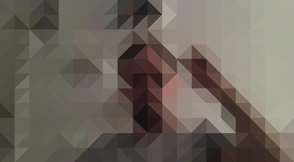

loopr
is a suite of tools for creating and broadcasting a webcam made of animated gifs and filters /
loopr
is very much a work in progress and you can
follow along on github
/
loopr
is a thing by
aaron straup cope